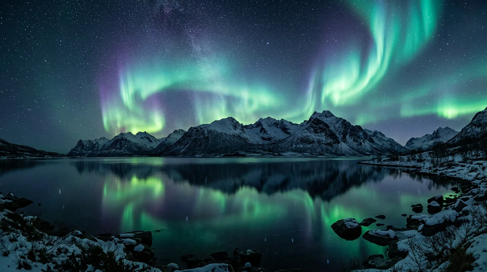

The sky
remembers the sun.
On the aurora borealis — a nightly argument between the sun's exhaled particles and the planet's own magnetic skin.

What lights up the arctic night is not weather in any ordinary sense but a collision written in the language of physics: charged particles thrown out by the sun in a constant wind reach Earth after a two- or three-day crossing, and where the planet's magnetic field funnels them down toward the poles, they strike oxygen and nitrogen sixty to two hundred miles up, knocking electrons briefly out of place. Green comes from oxygen giving that energy back near sixty miles altitude, the most common and most efficient trade; rarer red comes from oxygen higher up, where collisions are sparser and the glow lingers longer before it fades; violet and blue trace nitrogen lower in the column, where the air is thicker and the light sharper. None of this makes the display any less strange to stand under. Long before anyone measured solar wind speed or magnetic latitude, the Cree spoke of it as relatives dancing, the Sámi warned children not to whistle back at it, and Norse sailors read it as light off a bridge to another world — three different explanations arriving at the same hour, for the same reason: something that old and that unearned in its beauty asks to be accounted for, one way or another.